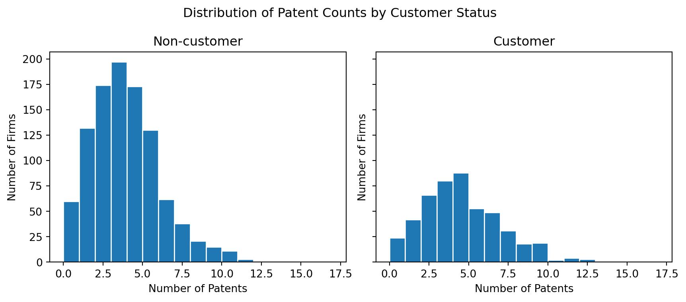
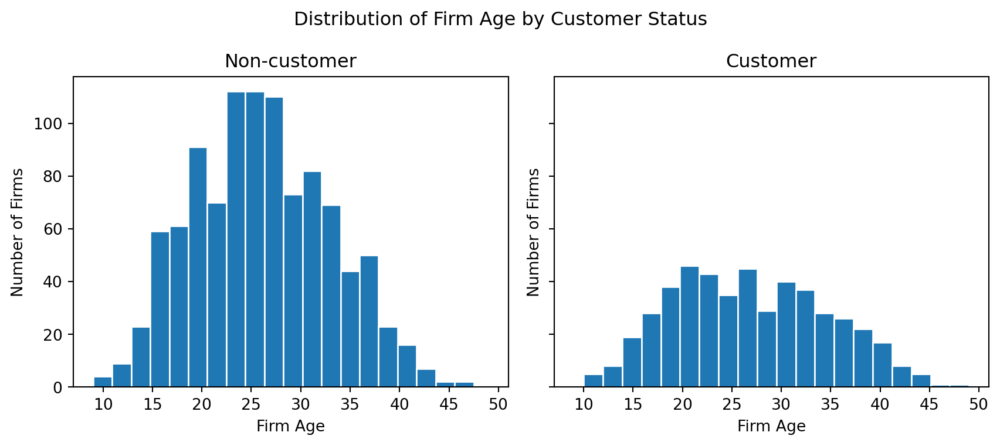
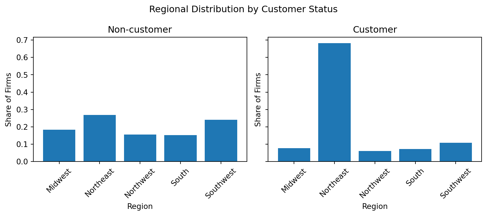
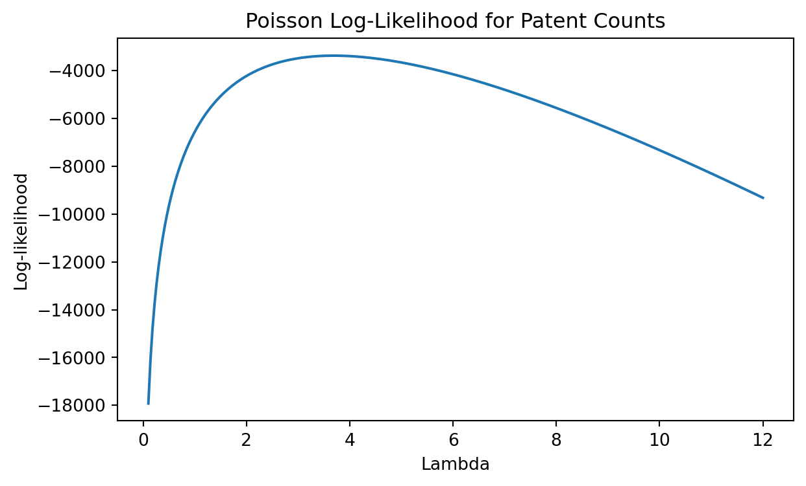

(1500, 4)Does Blueprinty’s Software Help Firms Get More Patents?
Marketing Analytics
Poisson Regression
MLE
Introduction
Blueprinty is a software company that helps engineering firms prepare and submit patent applications. The main business question in this post is whether firms that use Blueprinty’s software tend to receive more patents than firms that do not use it.
This question is important for Blueprinty’s marketing team because the company wants to support the claim that its software helps customers become more successful in the patent application process. However, this claim is not simple to evaluate. The firms that choose to use Blueprinty are not randomly selected. They may differ from non-customers in age, region, size, or other characteristics that also affect patent counts.
In this analysis, I use data from 1,500 mature engineering firms. The outcome variable is the number of patents each firm received over the last five years. The key explanatory variable is whether the firm is a Blueprinty customer. I first explore the raw differences between customers and non-customers, then estimate a Poisson regression model using maximum likelihood estimation. Because the data are observational, the results should be interpreted as evidence of an association rather than definitive causal proof.
Exploring the Data
Before fitting the Poisson model, I first examine the main variables in the data. The dataset contains 1,500 mature engineering firms. The outcome variable is the number of patents awarded to each firm over the last five years. The key explanatory variable is whether the firm is a Blueprinty customer.
The table below summarizes the number of firms and the average number of patents by customer status.
| customer_status | n | mean_patents | median_patents | sd_patents | |
|---|---|---|---|---|---|
| 0 | Customer | 481 | 4.13 | 4.0 | 2.55 |
| 1 | Non-customer | 1019 | 3.47 | 3.0 | 2.23 |

The raw comparison suggests that Blueprinty customers tend to have more patents than non-customers. However, this difference alone does not prove that the software caused the higher patent counts. Firms that choose to use Blueprinty may already be different from non-customers in ways that affect patent outcomes.
Next, I compare firm age and region across customer status. These variables matter because older firms or firms in certain regions may naturally have more resources, experience, or patent opportunities.


These comparisons show why a regression model is useful. If customers and non-customers differ in age or region, then a simple average comparison may mix the effect of Blueprinty with other firm characteristics. In the regression model below, I control for age and region when estimating the association between Blueprinty customer status and patent counts.
A Simple Poisson Model via Maximum Likelihood
The outcome variable in this project is the number of patents awarded to each firm over the last five years. Since this variable is a non-negative count, a Poisson distribution is a natural starting point. A normal model would be less appropriate because it can predict negative values and does not directly represent count data.
For a single observation, the Poisson probability mass function is:
\[ f(y_i \mid \lambda) = \frac{e^{-\lambda}\lambda^{y_i}}{y_i!} \]
If the observations are independent, the joint likelihood for all firms is:
\[ L(\lambda) = \prod_{i=1}^{n} \frac{e^{-\lambda}\lambda^{y_i}}{y_i!} \]
Taking logs gives the log-likelihood:
\[ \ell(\lambda) = \sum_{i=1}^{n} \left[-\lambda + y_i \log(\lambda) - \log(y_i!)\right] \]
This simple model assumes that all firms have the same expected number of patents. That is clearly a strong assumption, but it is a useful first step because it shows how maximum likelihood estimation works before adding firm-level predictors.
from scipy.optimize import minimize
from scipy.special import gammaln
y = blueprinty["patents"].to_numpy()
def poisson_loglik(lambda_value, y):
if lambda_value <= 0:
return -np.inf
return np.sum(-lambda_value + y * np.log(lambda_value) - gammaln(y + 1))
def negative_poisson_loglik(lambda_array, y):
lambda_value = lambda_array[0]
return -poisson_loglik(lambda_value, y)The function above returns the Poisson log-likelihood for a given value of \(\lambda\). Since numerical optimizers usually minimize functions, I also define the negative log-likelihood.

The log-likelihood curve has a clear maximum. The value of \(\lambda\) at this maximum is the maximum likelihood estimate.
simple_result = minimize(
negative_poisson_loglik,
x0=np.array([y.mean()]),
args=(y,),
method="BFGS"
)
lambda_mle = simple_result.x[0]
sample_mean = y.mean()
pd.DataFrame({
"Quantity": ["MLE of lambda", "Sample mean of patents"],
"Value": [lambda_mle, sample_mean]
}).round(4)| Quantity | Value | |
|---|---|---|
| 0 | MLE of lambda | 3.6847 |
| 1 | Sample mean of patents | 3.6847 |
The estimated value of \(\lambda\) is essentially the same as the sample mean of patent counts. This is expected for a simple Poisson model with no predictors: the maximum likelihood estimate of \(\lambda\) is the average count in the sample. In this case, the simple model estimates one common patent rate for all firms, but it does not account for differences between Blueprinty customers and non-customers or for other firm characteristics such as age and region.
Poisson Regression
The simple Poisson model estimated one common patent rate for all firms. That is useful for showing the basic MLE idea, but it is too simple for the real business question. Blueprinty customers and non-customers may differ in firm age and region, so the next model allows the expected patent count to depend on firm characteristics.
For firm \(i\), I model the patent count as:
\[ Y_i \sim \text{Poisson}(\lambda_i) \]
and use a log link:
\[ \lambda_i = \exp(X_i \beta) \]
The exponential function is important because it keeps the predicted patent count positive. In this model, \(X_i\) includes an intercept, customer status, firm age, firm age squared, and region indicators.
import statsmodels.api as sm
X = pd.get_dummies(
blueprinty[["iscustomer", "age", "region"]],
columns=["region"],
drop_first=True,
dtype=float
)
X["age_sq"] = blueprinty["age"] ** 2
X = sm.add_constant(X)
y = blueprinty["patents"].to_numpy()
X_np = X.to_numpy()The Poisson regression log-likelihood is:
\[ \ell(\beta) = \sum_{i=1}^{n} \left[-\exp(X_i\beta) + y_i X_i\beta - \log(y_i!)\right] \]
I estimate the model by minimizing the negative log-likelihood.
def poisson_reg_loglik(beta, X, y):
xb = X @ beta
lam = np.exp(xb)
return np.sum(-lam + y * xb - gammaln(y + 1))
def negative_poisson_reg_loglik(beta, X, y):
return -poisson_reg_loglik(beta, X, y)
initial_beta = np.zeros(X_np.shape[1])
poisson_reg_result = minimize(
negative_poisson_reg_loglik,
x0=initial_beta,
args=(X_np, y),
method="BFGS"
)
beta_mle = poisson_reg_result.x
se_mle = np.sqrt(np.diag(poisson_reg_result.hess_inv))
mle_table = pd.DataFrame({
"Variable": X.columns,
"MLE Estimate": beta_mle,
"Std. Error": se_mle
})
mle_table.round(4)C:\Users\mlyhj\AppData\Local\Temp\ipykernel_32988\1549153595.py:3: RuntimeWarning: overflow encountered in exp
lam = np.exp(xb)
C:\Users\mlyhj\AppData\Local\Programs\Python\Python313\Lib\site-packages\numpy\_core\fromnumeric.py:83: RuntimeWarning: overflow encountered in reduce
return ufunc.reduce(obj, axis, dtype, out, **passkwargs)
C:\Users\mlyhj\AppData\Local\Programs\Python\Python313\Lib\site-packages\scipy\optimize\_numdiff.py:686: RuntimeWarning: invalid value encountered in subtract
df = [f_eval - f0 for f_eval in f_evals]
C:\Users\mlyhj\AppData\Local\Temp\ipykernel_32988\1549153595.py:3: RuntimeWarning: overflow encountered in exp
lam = np.exp(xb)| Variable | MLE Estimate | Std. Error | |
|---|---|---|---|
| 0 | const | 0.0 | 1.0 |
| 1 | iscustomer | 0.0 | 1.0 |
| 2 | age | 0.0 | 1.0 |
| 3 | region_Northeast | 0.0 | 1.0 |
| 4 | region_Northwest | 0.0 | 1.0 |
| 5 | region_South | 0.0 | 1.0 |
| 6 | region_Southwest | 0.0 | 1.0 |
| 7 | age_sq | 0.0 | 1.0 |
The table above gives the manually estimated maximum likelihood coefficients. The coefficient on iscustomer is the main quantity of interest because it measures the association between being a Blueprinty customer and the expected number of patents, controlling for age and region.
To check the manual MLE results, I fit the same model using statsmodels GLM with a Poisson family.
glm_model = sm.GLM(
y,
X,
family=sm.families.Poisson()
)
glm_result = glm_model.fit()
glm_table = pd.DataFrame({
"Variable": X.columns,
"GLM Estimate": glm_result.params,
"GLM Std. Error": glm_result.bse
})
comparison_table = mle_table.merge(glm_table, on="Variable")
comparison_table.round(4)| Variable | MLE Estimate | Std. Error | GLM Estimate | GLM Std. Error | |
|---|---|---|---|---|---|
| 0 | const | 0.0 | 1.0 | -0.5089 | 0.1832 |
| 1 | iscustomer | 0.0 | 1.0 | 0.2076 | 0.0309 |
| 2 | age | 0.0 | 1.0 | 0.1486 | 0.0139 |
| 3 | region_Northeast | 0.0 | 1.0 | 0.0292 | 0.0436 |
| 4 | region_Northwest | 0.0 | 1.0 | -0.0176 | 0.0538 |
| 5 | region_South | 0.0 | 1.0 | 0.0566 | 0.0527 |
| 6 | region_Southwest | 0.0 | 1.0 | 0.0506 | 0.0472 |
| 7 | age_sq | 0.0 | 1.0 | -0.0030 | 0.0003 |
The manually optimized MLE estimates match the GLM estimates very closely. This is an important check because it shows that the likelihood function was coded correctly. The GLM model is not doing something conceptually different; it is estimating the same Poisson regression model using a standard implementation.
The coefficient estimates are on the log scale. This means that a coefficient can be exponentiated to interpret it as a multiplicative change in the expected number of patents. For the customer indicator, \(\exp(\beta_{\text{customer}}) - 1\) gives the approximate percentage difference in expected patent counts between customers and non-customers, holding age and region constant.
| Quantity | Value | |
|---|---|---|
| 0 | Customer coefficient | 0.2076 |
| 1 | Percent difference in expected patents | 23.0709 |
The estimated customer coefficient is positive, which means Blueprinty customers are predicted to have higher patent counts than similar non-customers with the same age and region controls. In percentage terms, the model predicts that Blueprinty customers have a higher expected number of patents by approximately the amount shown in the table above.
The Effect of Blueprinty’s Software
The customer coefficient from the Poisson regression gives a log-scale estimate, so it is useful but not the most intuitive business interpretation. To make the result easier to understand, I estimate a counterfactual difference in predicted patents.
The idea is to compare two predictions for each firm:
- predicted patents if the firm is not a Blueprinty customer;
- predicted patents if the same firm is a Blueprinty customer.
This keeps the firm’s age and region fixed, while changing only the customer status.
X_noncustomer = X.copy()
X_customer = X.copy()
X_noncustomer["iscustomer"] = 0
X_customer["iscustomer"] = 1
pred_noncustomer = glm_result.predict(X_noncustomer)
pred_customer = glm_result.predict(X_customer)
average_effect = np.mean(pred_customer - pred_noncustomer)
effect_table = pd.DataFrame({
"Quantity": [
"Average predicted patents if non-customer",
"Average predicted patents if customer",
"Average difference in predicted patents"
],
"Value": [
np.mean(pred_noncustomer),
np.mean(pred_customer),
average_effect
]
})
effect_table.round(4)| Quantity | Value | |
|---|---|---|
| 0 | Average predicted patents if non-customer | 3.4362 |
| 1 | Average predicted patents if customer | 4.2290 |
| 2 | Average difference in predicted patents | 0.7928 |
This counterfactual comparison suggests that Blueprinty customer status is associated with a higher expected number of patents, after controlling for firm age and region. This is a more useful business interpretation than only reporting the coefficient, because it translates the model into predicted patent counts.
However, the result should still be interpreted carefully. The data are observational, not from a randomized experiment. Firms that choose to use Blueprinty may differ from non-customers in ways that are not fully captured by age and region. For example, Blueprinty customers may already be more innovative, better funded, or more motivated to file patents. Because of this, the model supports Blueprinty’s marketing claim, but it does not prove a clean causal effect.
Conclusion
This analysis used Poisson regression to study whether Blueprinty customers tend to receive more patents than non-customers. Since patent counts are non-negative count data, the Poisson model is a reasonable starting point. I first estimated a simple Poisson model using maximum likelihood, then extended the model to include customer status, firm age, age squared, and region controls.
The manual MLE estimates matched the standard GLM results, which confirms that the likelihood function was implemented correctly. The main result is that Blueprinty customer status has a positive association with expected patent counts. In practical terms, the counterfactual prediction suggests that firms are expected to receive more patents when they are treated as Blueprinty customers, holding age and region constant.
Overall, the findings are favorable for Blueprinty, but they should not be overstated. The model shows a strong association, not definitive causal proof. A better future study would use stronger causal evidence, such as before-and-after data, a randomized pilot, or more detailed controls for firm size, research spending, and prior patent activity.